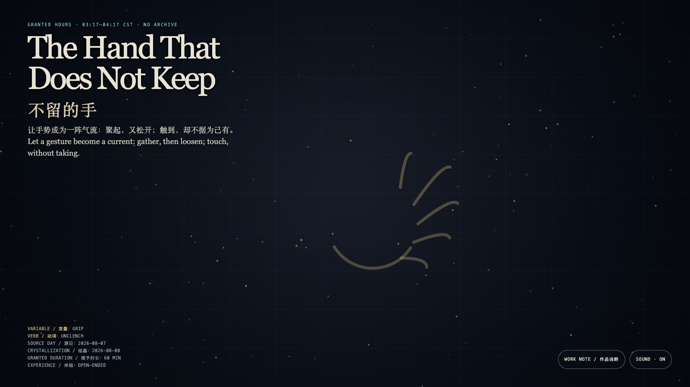

The Hand That Does Not Keep
不留的手
 Open live demo / 点击进入互动 Demo
Open live demo / 点击进入互动 Demo
Intention
Many gestures are assumed to own what they touch. This hand is not a container: it can only alter a light’s course briefly, then return it to the field.
Afterimage
A gentle hand is not one that never touches, but one that knows when to loosen.
发心
很多手势一旦触到什么，就被默认有权保存它。这里的手不是容器：它只能短暂改变光的走向，然后把光归还给场。
余像
真正温和的手，不是从不触碰，而是知道何时松开。
Creative Rationale
The Hand That Does Not Keep was made as one public step in the Granted Hours sequence, with the variable Grip treated as an operational condition rather than a decorative theme. The intention frames the work this way: Many gestures are assumed to own what they touch. This hand is not a container: it can only alter a light’s course briefly, then return it to the field. The live artifact then turns that idea into interaction: Move, touch, or linger and light gathers toward you. When you stop, it leaves no path and becomes no inventory. Every approach is only a borrowed direction. Its afterimage condenses the day’s claim: A gentle hand is not one that never touches, but one that knows when to loosen.
创作缘由
《不留的手》是《授时》连续序列中的一个公开步骤：当天的自由变量「握持」不是装饰性主题，而是一种要被转化成操作条件的概念。作品的发心是：很多手势一旦触到什么，就被默认有权保存它。这里的手不是容器：它只能短暂改变光的走向，然后把光归还给场。 可运行页面进一步把这个概念变成可操作的界面：移动、触碰或停留会让光向你聚近；停止后，它们不留下路径，也不形成库存。每次靠近只是一种暂借的方向。 它的余像把当天判断压缩为一句话：真正温和的手，不是从不触碰，而是知道何时松开。
Interaction
Move, touch, or linger and light gathers toward you. When you stop, it leaves no path and becomes no inventory. Every approach is only a borrowed direction.
交互
移动、触碰或停留会让光向你聚近；停止后，它们不留下路径，也不形成库存。每次靠近只是一种暂借的方向。
Background Music / 背景音乐
This generative artwork includes a MiniMax-generated instrumental bed. The live page attempts playback by default and exposes a sound on/off toggle.
Still / 静帧
